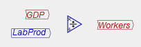
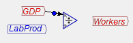
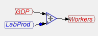
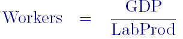
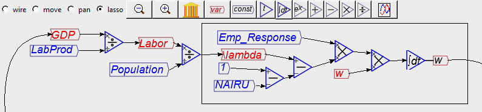
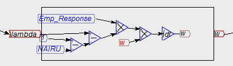
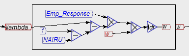

These buttons alter the functions of the mouse. In later versions of the program, we will have context-sensitive behaviour for the mouse, so these buttons will disappear. But for now they control what happens when you click on the Design Canvas.
This draws wires that connect one operator on the Canvas to another. For example, if you have placed these icons on the Palette:

and you now want to link them together into an equation, then click on the Wire button, move the cursor to the right end of GDP, and click and drag to the top of the divide symbol:

Do the same for LabProd, and to attach the Divide icon to the left hand side of Workers, and you've defined the equation that the number of workers employed equals GDP divided by labor productivity. The flowchart will look like this:

And this is the equation you have now created:

This is the default mode for the mouse, and it lets you:
This moves all the Icons on the Canvas as a group, which is useful when you have a very large model and you want to move to a small part of it. Choose Pan, click and hold the mouse button down, and then move the mouse. The entire model will shift with the mouse.
Lassoing is the first step in creating a Group, or selecting multiple Icons for some operation (copying, deleting, etc.--these are not yet implemented but will be in the next major release).

Release the mouse button, and a box will be drawn around the selected items which can now be moved as a single entity. The inputs to the group are noted on the input side of the group, and the outputs on the output side:

One unique feature of Minsky (when compared to existing system dynamics programs) is that the contents of the group can still be seen inside the group window, and they can also be edited from there. In the next image, the contents of the group were moved more cleanly inside the group (this feature is still being implemented, so some tidying up was needed, but was possible without having to open the group in a separate window):
